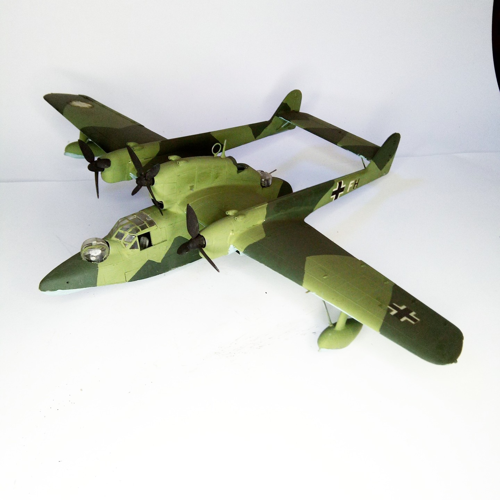

Aerei · scale model archive
Blohm&Voss BV138
Blohm&Voss BV138 — Kit: Supermodel, Scale: 1/72. 3./SAGr. 125 JA+FH April 1943 - Konstanza RO #1/72 #Supermodel

Photo gallery
English description
3./SAGr. 125 JA+FH April 1943 - Konstanza RO
#1/72 #Supermodel
Descrizione italiana
3./SAGr. 125 JA+FH aprile 1943 - Konstanza RO.